- Semi-Final 14,083#3
- Semi-Final 2132#27
- Third Chance4,384#4
finals wild card at 4,250 · design documentation 583/860, #26
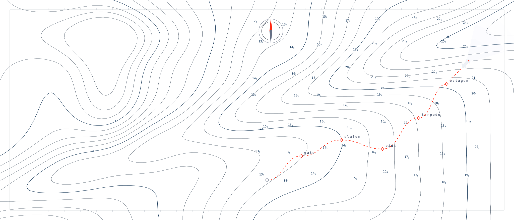
An autonomy stack // for autonomous underwater vehicles
named for the port of Mongla · Pasur River, Bangladesh · the gateway to the Sundarbans
Machines that have to work when nobody is watching.
Underwater there is no radio, no GPS, and no second chance to explain yourself. A vehicle either understood what it was looking at, or it did not — and it will not tell you which. This is the software that has to be right anyway.
Everything down here is working against you
Not as a metaphor. Each line is a force acting on a decision the software has to make, and each one is why some ordinary technique does not survive contact with the medium.
| the medium does this | so this breaks | what we measured |
|---|---|---|
| Absorbs red first, then everything | Colour thresholds, contrast tricks | 17 preprocessing configs, never once positive |
| Bends light at the port glass | Any angle taken from a datasheet | 63.8° in air → 46.7° in water |
| Blocks radio entirely | Telemetry, GPS, remote intervention | no link below the surface |
| Carries 800× the mass of air | Any controller tuned for a drone | added mass 1.0× displacement broadside |
| Moves while you are deciding | Position held by dead reckoning | 0.12 m/s current → 1.374 m of drift in 40 s |
| Hides the thing you were tracking | Detectors that assume continuity | 71 real detection gaps, catalogued |
tools/colour_loss.py.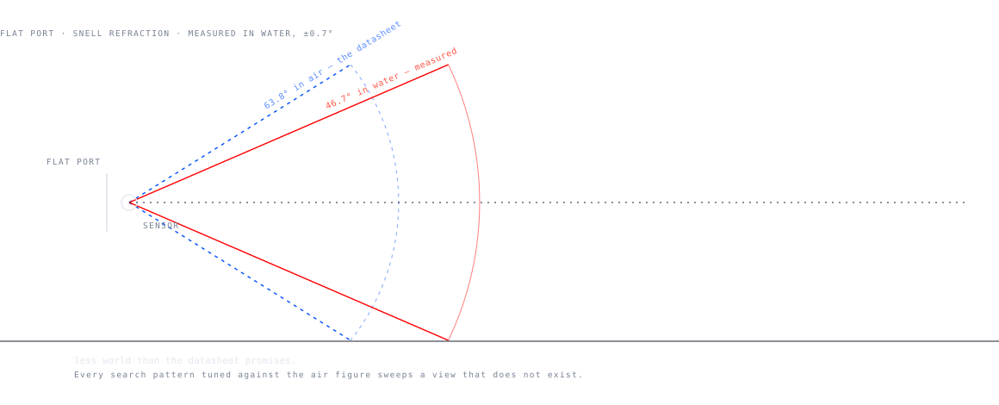
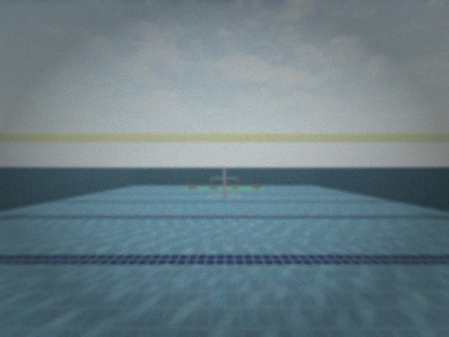
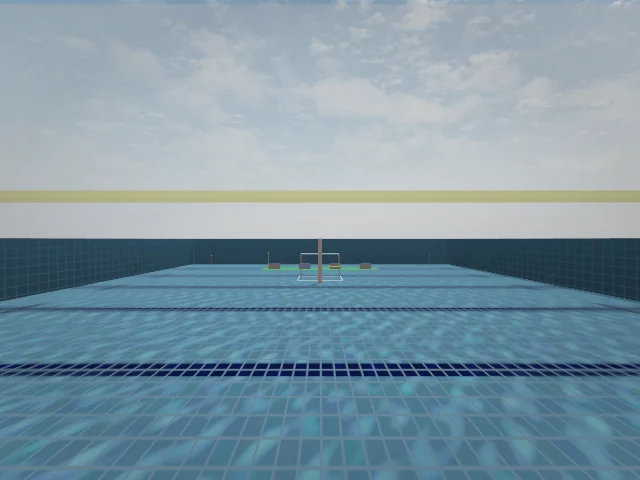
[ clear ][ murky ]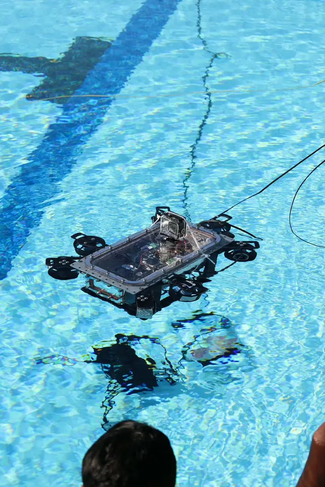
“For a successful technology, reality must take precedence over public relations, for nature cannot be fooled.”
Act one // where it learned
Mongla began as the autonomy software for a university AUV programme. It flew on that programme's vehicles. The vehicles, the team and the name stayed there; the software, and everything it had been taught, came here.
The programme's vehicle takes 2nd at RoboSub. This is the team's result, a year before the author joined; it is here as the ground he started on.
Detection, tracking, and the slow discovery that most published underwater-vision advice does not survive being measured on your own footage.
The author leads the vision sub-team. It worked, and it had a ceiling: our control ran at 20 Hz, steering a box we were not allowed inside.
The campaign he led as engineering lead, still on the programme's vehicle. In September he left the university, on principle; Mongla continues independently, with the firmware and hardware lead as its only co-author.
finals wild card at 4,250 · design documentation 583/860, #26
finals wild card at 6,500 · design documentation 628/860, #28
tools/robosub_record.py, never typed in. Best round 4,083 → 6,234 points (+53%). The red tick is that year's published finals wild-card threshold; seven teams made the finals, and clearing the line on a third-chance run, as 2025 did, was not enough to be one of them. Both vehicles were the university programme's, on the old stack; nothing on the SROT board has been in water.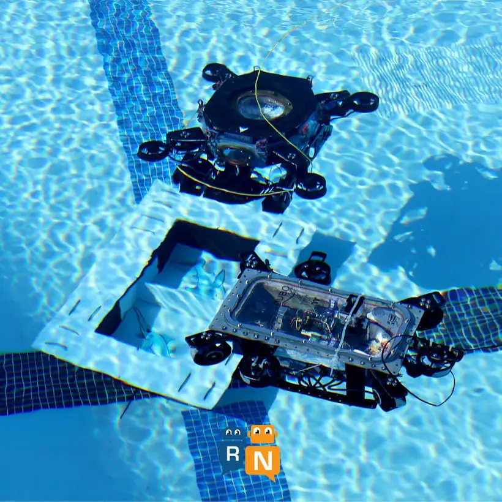
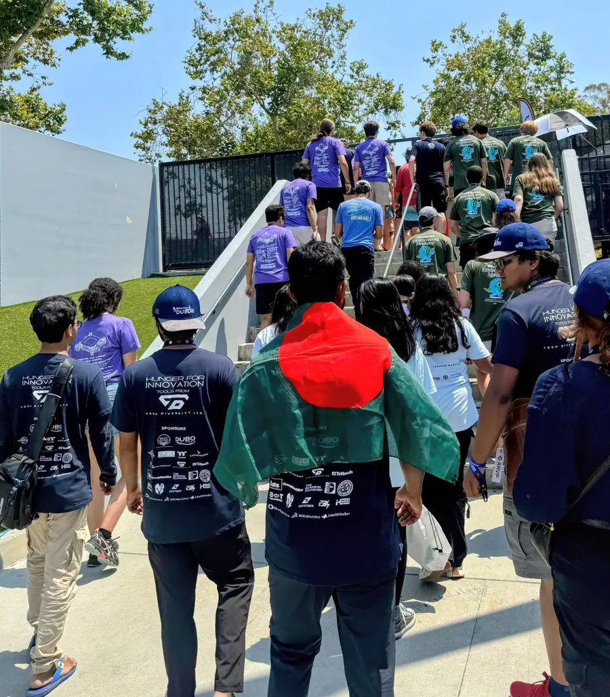
“A ship in port is safe, but that is not what ships are built for.”
Act two // opening the box
A companion computer cannot hold an attitude: it sits on the far side of a cable, answering at whatever rate it can manage. So the reflexes live on a board we write the firmware for, and the Pi is left to do nothing but think.
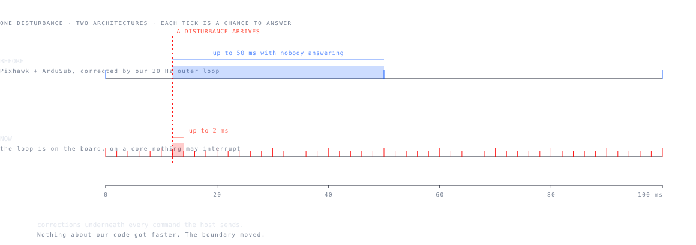
If the reflexes live on the board, the Pi should have almost nothing to say — and it
doesn't. Here is the whole of move_forward, the most ordinary thing the vehicle is
ever asked to do, exactly as it leaves the Pi. Read it left to right, the way the board does.
The first ten bytes are the envelope: where a frame starts, how long it is, who sent it, what kind of message it is. The part that means anything is three numbers — a type, a duration, a speed — and one tag that says “this is ours”. There is no thrust in it. No motor, no angle, no depth. Which thrusters spin, how hard, and how the hull holds its heading for those three seconds is the board's business; the Pi only said what it wanted.
mongla move_forward 3 --gain 40the cable carries · 44 bytes| STX | 0xFD | a MAVLink 2 frame starts here |
| LEN | 32 | payload length — MAVLink 2 cut 1 trailing zero byte |
| INCOMPAT | 0 | no flags set: the frame is unsigned |
| SEQ | 0 | counts frames, so the board can see a loss |
| SYSID | 255 | who is speaking: the Pi |
| COMPID | 191 | ONBOARD_COMPUTER — the id the board's link failsafe listens for |
| MSGID | 76 | COMMAND_LONG, little-endian |
| p1 · type | 0 | MOVE_FORWARD |
| COMMAND | 31000 | CMD_SROT_MOVE — the one custom command |
| TGT SYS | 1 | the board |
| TGT COMP | 1 | its autopilot |
| CRC | 0x1EFD | checksum, seeded by the message definition itself |
tools/wire_frame.py from the project's own verb table, packed by pymavlink exactly as the manager sends it, then decoded back — the tool fails if the frame does not round-trip.| layer | what it owns | rate | state |
|---|---|---|---|
| SROT board — firmware Hengla | IMU, depth, leak, kill, thrust mixing | 500 Hz | bench |
| Raspberry Pi 5 + Hailo-8 | Detection, tracking, optical-flow velocity | 53.9 Hz | bench |
| Host control | Verbs, vision loops, mission logic | 20–50 Hz | bench |
| Estimation | Right-invariant EKF, late measurements replayed in order | — | software |
| Anything at all, in water | — | — | blocked |
“A complex system that works is invariably found to have evolved from a simple system that worked.”
Two long reads // the same argument, at full length
One explains why the vehicle is split the way it is, from first principles and with no assumed background. The other lists every capability with the file or the measurement behind it, and refuses to hide the rows that are blocked. Both previews below are generated from those documents, so neither can quietly drift from what it is advertising.
Why the reflexes live on a 500 Hz board and the thinking on a Pi, written for someone who has never seen a flight controller. The whole argument is one table — the board’s own timetable, two cores that never share a desk.
55 capabilities, each carrying the file or the measurement behind it and an honest state. The bar below is counted out of that page’s own table rows by tools/site_pages.py — including the state whose count is still zero.
A capability map that hides the blocked rows is marketing.
Play with it // the loop, in your hands
A controller is a machine that answers one question, over and over: I am here, I want to be there — how hard do I push? Below is a toy hull with one axis of heading. Turn the three knobs and watch it fail in the three classic ways. Nothing here is our vehicle: it is a simulation with made-up numbers, so that the shapes are honest even though the values are not.
Four things worth meeting by hand. P alone overshoots and rings: nothing is braking it, so at the moment it is finally pointing the right way it is still turning. Add D and the ringing dies, because it now pushes back against its own approach speed. At three seconds a current starts pushing, and the PD controller parks a degree or two short of the target for ever — it is pushing exactly hard enough to hold station and not hard enough to close the last degree. Only I fixes that, by remembering what is still missing. Then move the loop rate: the gains do not change, but the window in which the vehicle is on its own does. That is the number in the fourth readout.
On this vehicle that last knob is not ours to turn from the Pi. It is the board's, and it is pinned at 500 Hz on a core nothing else is allowed on — which is the whole argument of the section above.
A controller is not clever. It is patient, five hundred times a second.
Seven hundred and two millimetres of argument
The body // 702 mm, five thrusters, one uncontrolled axis
Drag it to turn it; take it apart with the fader, or jump to a stop. Every number below was read off the CAD geometry itself — 84,248 triangles at 0.9 mm tessellation, measured rather than quoted.
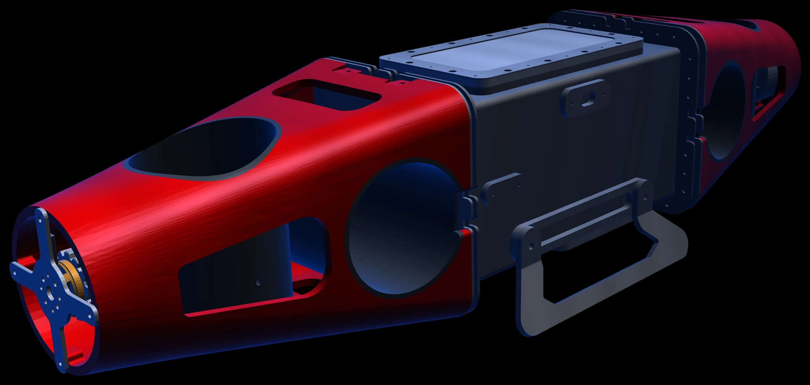
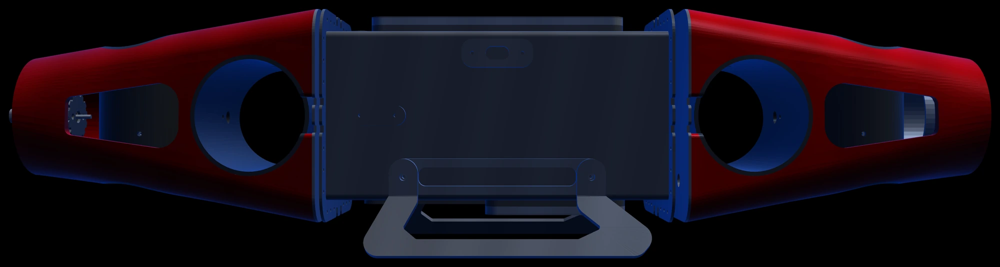
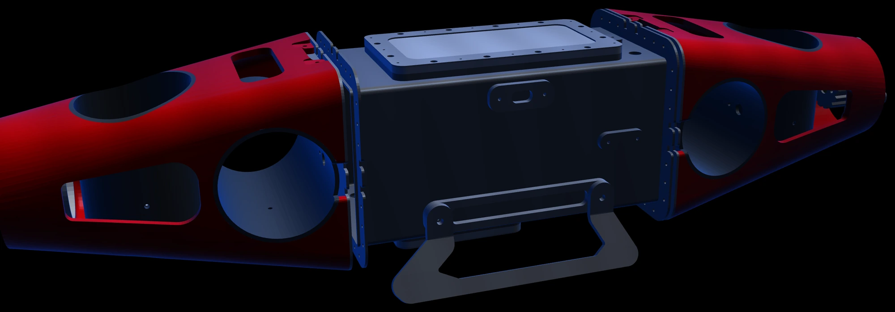
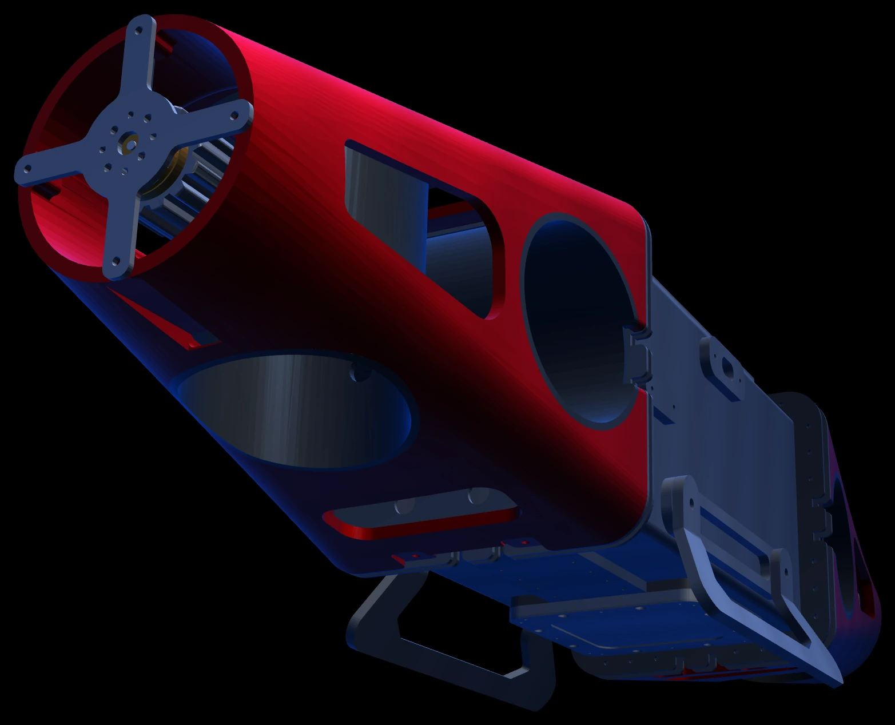
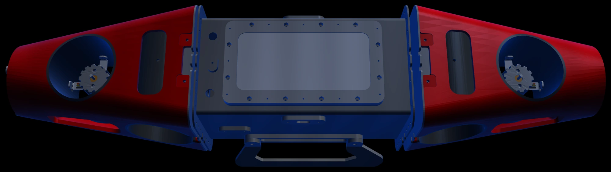
Every one of these is rendered at 2800 px from the same 84,541-triangle mesh the interactive model uses, with each part carrying its own material colour straight out of the CAD. Nothing here is a photograph, and nothing here is an artist's impression.
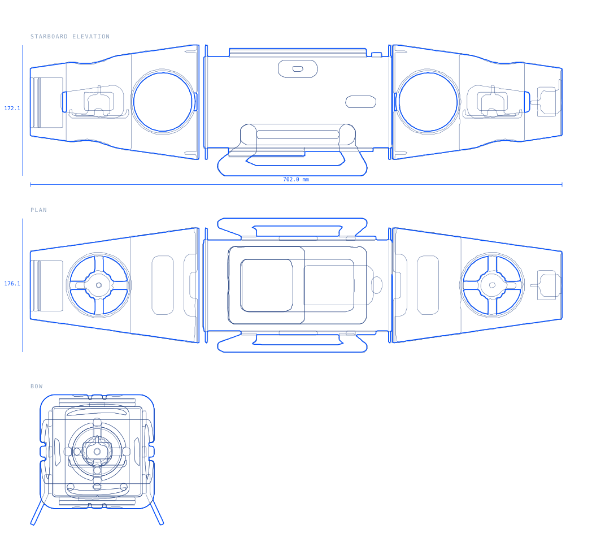
| measurement | value | why it matters |
|---|---|---|
| Length overall | 702.0 mm | One person can carry and launch it |
| Beam × height | 176.1 × 172.1 mm | Near-square section — form alone gives no preferred roll orientation |
| Fineness ratio | 3.99 | Just under the 4.5–6 band of minimum-drag bodies of revolution: slightly stubby, deliberately compact |
| Frontal area | 160.9 cm² | The water that has to be pushed aside |
| Wetted area | 1.107 m² | Where skin friction is paid |
| Lateral tunnels | 2 × ⌀84 mm at ±175 mm | Sway, and yaw on a 175 mm arm |
| Vertical tunnels | 2 × ⌀84 mm at ±259.5 mm | Heave, and pitch on a 259.5 mm arm |
| Axial thruster | 1, in the nose | Surge |
| Bilateral symmetry | ±88.05 mm, exact | No built-in turn bias to trim out |
Four tunnels and one axial unit buy five of six degrees of freedom — surge, sway, heave, pitch, yaw — with no vectoring linkage, no moving nozzles and nothing protruding into the flow. Tunnels also deliver full authority at zero forward speed, which is precisely the regime a task is won in: holding still in front of a hole. Bilateral symmetry is exact to ±88.05 mm, so there is no built-in turn to trim away. And the pitch couple is 48 % wider than the yaw couple (519 mm against 350 mm), which puts the stronger moment on the axis that has to resist a nose-down trim.
The four bores total 221.7 cm² of open aperture on a hull whose frontal area is 160.9 cm² — the holes come to 1.38× the frontal area. Open tunnels are cavities in cruise: they are the price of station-keeping authority, and it is paid continuously while transiting. At a fineness of 3.99 the body is already blunter than the drag optimum, so the two choices compound. The couples are also arguably the wrong way round — yaw is the axis an AUV actually uses, to hold heading against current and to line up on a target, and yaw got the narrower 350 mm couple. Swapping the tunnel pairs would favour the axis doing the work. And with every thruster on the centreplane, roll has no actuator at all: it has to be passively stable, which promotes the vertical placement of ballast from a detail to a load-bearing decision.
All of the above is geometry, and geometry is half a hull. These are unmeasured, and will not be guessed at here:
A shell mesh cannot answer the buoyancy question, and it would be easy to pretend otherwise: the enclosed volume of this model is 1.77 L, which is the surface and not the displacement. Using it would repeat a mistake this project has already made once, and written down. The geometry here is read straight out of the CAD by pack_hull.py, which is also what builds the model above.
Every number on this hull was read off the geometry. The ones that could not be read — mass, buoyancy, drag — are left blank, not guessed.
Play with it // when the vehicle cannot do what it was asked
"Forward, a little left, and turn" is three numbers. The vehicle has four horizontal thrusters, each of which can only give so much. When the sum of those demands exceeds what a motor can deliver, something has to give — and the choice of what gives is a design decision most people never make on purpose. Make the wrong one and a vehicle asked to go straight quietly turns instead.
Four horizontal units at 45°, so each one contributes to all three axes at once: m₁ = s + l + y, m₂ = s − l − y, m₃ = s − l + y, m₄ = s + l − y. Ask for 0.8 forward and 0.4 of turn and one motor is already being asked for 1.55 of a thing that stops at 1.0.
Clip it there and the four motors no longer stand in the ratio the demand described. Run the arithmetic backwards — s′ = (m₁+m₂+m₃+m₄)/4 and so on — and the motion that comes out has a yaw term nobody asked for. The vehicle is not disobeying. It is doing exactly what four clipped numbers mean.
Scaling the whole demand by one factor costs speed and keeps direction: you arrive later, along the line you meant. Clipping costs direction and keeps speed: you arrive somewhere else, on time. For a vehicle following a visual target, the second failure is far worse, because the controller sees the drift and asks for more correction — which saturates harder.
The board scales, and the host fits the demand yaw-first before sending it
(allocation.py),
on the view that a heading you did not ask for is the most expensive thing to be given.
⚠ One honest caveat: the mixer above is the firmware's eight-thruster geometry, of which four are horizontal. The hull currently in CAD has five thrusters in a different arrangement. Both are true of something; they are not true of the same vehicle, and this figure says which one it is drawing.
Saturation is where a vehicle stops doing what it was told and starts doing arithmetic.
The suite // three repositories, one wire
Four repositories, two authors, and a rule that is easy to state and hard to keep: we never commit to theirs, they never commit to ours. Anything missing at the low level is a pull request, not a workaround on our side.
| repository | what it is | who owns it | how we reach it |
|---|---|---|---|
| Mongla | Perception, estimation, mission language, simulator — this repository | Muhammad Fahim Faisal | — |
| Hengla — srot-control-board | The firmware. ESP32 dual-core plus an RP2350 thruster co-processor | Rakibul Islam | MAVLink 2 over one USB-C cable |
| Bondor — srot-ground-station | The operator's desktop GCS, plus a LoRa bridge | Rakibul Islam | serial · UDP 14550 · LoRa 433 MHz |
| srot-esc-flasher | Bench tool — puts Bluejay on the ESCs | Rakibul Islam | 4-way interface |
Core 1 is the flight loop and nothing else is permitted to run there: read the IMU, decide what each axis should do, split that across eight thrusters, listen to what came back, repeat two milliseconds later. Core 0 carries everything that can afford to wait — MAVLink at 100 Hz, LoRa and the SD card at 20, the display at 30. The RP2350 speaks bidirectional DShot, so an ESC reports the RPM it actually reached rather than the one it was asked for.
That last detail is the one worth pausing on. Without it the motors never answer: you ask for thrust and the honest answer to "is thruster three actually spinning?" was nobody knows. Telemetry back from the ESC turns an open question into a measurement — which is exactly how we learned that 958 of 958 recorded ESC frames read zero with nothing plugged in, and that counting messages is not a health check.
| core 1 | 500 Hz | sensors · control · DShot |
|---|---|---|
| core 0 | 100 Hz | MAVLink to the Pi |
| core 0 | 30 Hz | display |
| core 0 | 20 Hz | LoRa and SD card |
An Electron and React desktop application built
specifically for this board: teleop, a SROT_MOVE console, parameters, calibration,
motor test, PID tuning and autotune, black-box analysis and a configurable joystick tab. It
connects over USB serial at 115200 — opened with DTR and RTS de-asserted, deliberately, so
that attaching a ground station does not reset the flight controller — or over UDP, or
receive-only over LoRa at 433 MHz, 250 kHz bandwidth, SF7, CR 4:5.
Three copies of the wire contract exist on purpose, because there are no submodules across the suite: the LoRa struct, the vendored MAVLink dialect, and a hand-mirrored TypeScript copy of the message ids. The firmware is the source of truth for all three, and a mismatch does not raise an error — it fails CRC silently and looks exactly like being out of radio range. On our side the same hazard is answered by a test that reads the firmware's own headers and fails if our constants have drifted from them.
All three follow the firmware. A mismatch fails CRC silently — and looks exactly like being out of radio range.
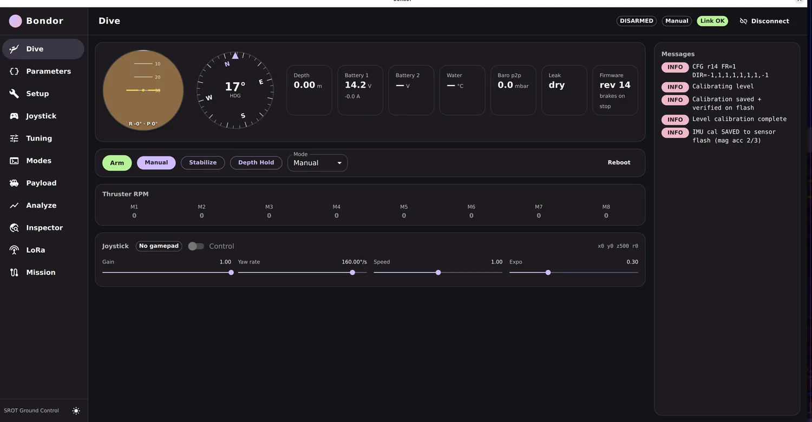
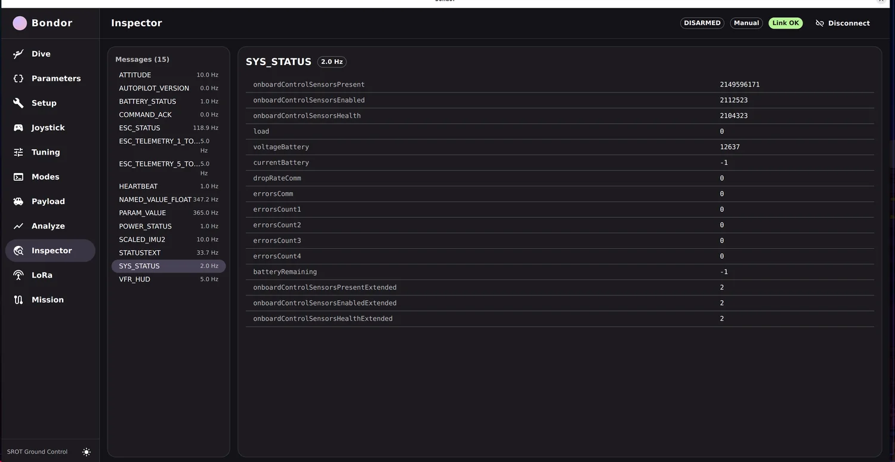
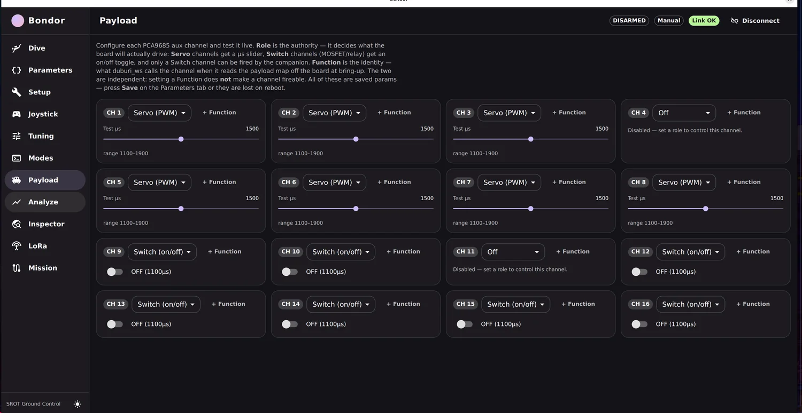
“One way is to make it so simple that there are obviously no deficiencies, and the other way is to make it so complicated that there are no obvious deficiencies.”
Play with it // four switches, one observable
Between "turn left" and the water there are four independent places a sign can be flipped: the axis convention the host writes, a firmware parameter that negates every axis before the mixer, a firmware revision that changed what positive yaw means, and the direction each motor was told it spins. You can only ever observe their product — which way the hull actually went. Every one of these has been wrong on this vehicle at least once, and the register of that is in BUGS.md.
Pick "two wrongs" above. The hull turns the way it was asked, every bench check passes, and the vehicle is misconfigured in two places at once. Nothing in the observable disagrees, because the observable is a product and the product is right. The configuration only reveals itself when someone corrects one of the two — at which point a fix makes the vehicle worse, which is the single most confusing thing that can happen to a team on a pool deck.
This is why the rule here is to read the parameters before arming rather than to test the turn. A turn tells you about the product. Only the parameters tell you about the factors.
The firmware revision is a hull-safety interlock: the board reports
SROT_FW_BEHAVIOUR_REV, and the host refuses at connect and again inside
arm() if it is below the floor in srot_protocol.py. The floor is
deliberately not a number written in prose anywhere — a test fails any document that quotes
a stale one, because a remembered constant is how a check gets silently disabled.
The other three switches are configuration, and configuration is checked by
reading it. FRAME_REVERSE = 1 with MOT_1..8_DIRECTION all
−1 is the documented double-inversion hazard: if all eight read
−1, the axis fix is cancelled and six of the motors are individually
inverted — a hull that turns correctly and mixes incorrectly.
A sign error is the only bug that can be fixed twice and thereby unfixed.
Perception to propulsion // one frame, all the way down
Follow one frame from the moment light reaches the lens to the moment a propeller should turn. Every stop carries the number measured there and the file that does the work — and the last two carry the honest word for what has not been measured yet.
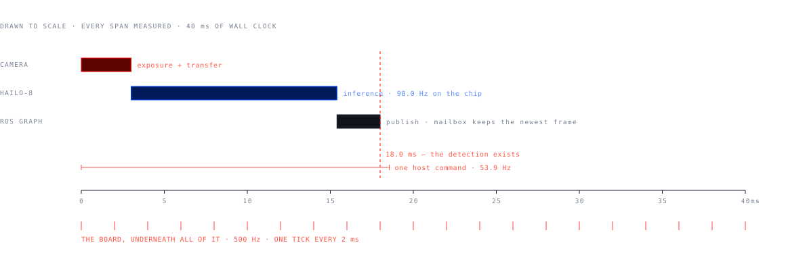
Ten stops, and the only one we could not measure is the last: the water pushing back.
Play with it // one cable, and what fits down it
Everything the board says crosses one USB-C cable at 115 200 baud — about 11 520 bytes a second once the start and stop bits are paid for. Today the link runs at a measured 18.8 % of that. The temptation, always, is to add "just one more" stream; the cost is not that the new stream is slow, it is that everything already on the wire starts queueing behind it — including the heartbeat the board uses to decide whether anyone is still there.
Measured: the link's capacity, the 18.8 % the vehicle uses today, and the heartbeat at 2 Hz against the board's 5 s silence failsafe — a 10× margin — and the bar this project ships against, which is ≤ 60 % of the wire. Those are in the ledger with their method.
Modelled: the queueing delay above. It is the standard result for a link at utilisation ρ — the wait grows like ρ/(1−ρ), which is flat and boring for most of its range and then vertical. The curve is drawn to make that shape felt, not to predict a millisecond. A figure that blurs which half is measured is worse than no figure.
The board surfaces the vehicle after 5 s without hearing from the Pi. That is a deliberate, good failsafe — and it means the heartbeat is the one message whose lateness is a vehicle-level event rather than a logging nuisance. A saturated wire does not announce itself as "telemetry is slow". It announces itself as a vehicle that surfaced in the middle of a run for no reason anyone can see on deck.
This is also why the interesting number is not bandwidth but headroom. At 18.8 % the link is not "mostly empty" — it is a system with a known distance to a cliff, and the only honest way to add a stream is to measure the distance again afterwards.
A link is not full or empty. It is near or far from the point where waiting begins.
The safety chain // what stops the vehicle, and what does not
A vehicle is not made safe by one clever guard. It is made safe by a chain of dull ones, each owned by a different part of the system, each catching a failure the others cannot see. Pick a failure below and watch which link takes it. The chain is drawn as it is configured today — including the link that is switched off and the one that cannot tell two different states apart.
-- / NaNevery valueLEAK_EN
is armed again — the reading below says so — and the kill-switch ambiguity
(measured-bars.md §26) is still an open ask to the firmware team, not something
this repository can close from the host.2417 of 11520 bytes a second · 78 messages · 160 frames the parser rejected. The tick is the 60 % bar this project ships against.
and the board states its own configurationCFG r14 FR=1 DIR=-1,1,1,1,1,1,1,-1revision 14 · FRAME_REVERSE = 1 · eight motor directions, and not all −1 — so the double inversion two sections above is not present on this hull, and the board is the one saying so.
tools/board_snapshot.py over the USB-C cable with DTR and RTS deasserted, so attaching did not reset the board; rendered by tools/board_panel.py from docs/data/board.json. Nothing was transmitted but the parameter reads. The electronics pack reads 19.03 V, the vehicle is disarmed, and there are no thrusters attached to it.Each link is simple enough to be obviously right, and each one lives where its failure can actually be seen. The board cannot know a mission is stuck; the host can. The host cannot act if the Pi has frozen; the board can. A human cannot react in two milliseconds; the loop can. No single layer could hold all eight, which is exactly why none of them tries.
It is also why the order of operations in arm() matters more than
any one check in it: the firmware revision is checked again at arm, not only at
connect, because a board can be re-flashed between the two and a revision below the floor
turns every command backwards.
The leak link was off, and is on. On 2026-09-07 this board read
LEAK_EN = 0 — the firmware gates both the pre-arm refusal and the surface failsafe
on that one parameter, so a leak would have done nothing. It was switched on before the bench
session on 2026-09-15, and the reading above says so: LEAK comes back present,
enabled and healthy. The link is only as good as its last reading, which is why this figure
carries the timestamp of one.
The kill link is ambiguous. KILL = 0 means "live"
or "the power board is not talking to us", and the host cannot tell which. So
arm() refuses only on a known engaged switch, and the display says
UNKNOWN rather than clear when the second board is silent. That is the
honest reading, not a fix — the fix is one line of firmware, and it has been asked for.
Safety is not the guard that catches everything. It is knowing exactly which failure each guard will not see.
One task // thought through, start to finish
Not pseudocode and not a flowchart of boxes. This is the real sequence, with the real rates, and with the places it is allowed to give up marked as clearly as the places it succeeds.
| step | what the machine is doing | rate | how it can fail, honestly |
|---|---|---|---|
| Arm | Check the firmware revision, refuse below the floor, verify the barometer is healthy, confirm the kill switch is live | once | Refuses. An unhealthy barometer denies every automatic move — it arms and simply will not go |
| Look | Hailo-8 runs the detector on the forward camera; the newest frame wins and surplus frames are dropped | 53.9 Hz | Returns nothing. A missing class sidecar yields an empty allowlist and a silent [] forever |
| Decide it is there | detected('gate') asks whether the class was seen inside a recency window, not whether it is in this exact frame |
1.0 s window | A flicker does not count as absence. An if here runs once — a moving search needs a loop |
| Centre it | vision.align drives lateral and yaw on the signed pixel offset from frame centre |
20–50 Hz host | Never raises. Returns ALIGNED, LOST, TIMEOUT, NO_CAMERA or ABORTED — and where it ended |
| Hold the lock | Live box, then tracker coast, then a geometric anchor matching image structure | 175 frames | Refuses rather than inventing. The ladder ends in a stated loss |
| Drive through | One SROT_MOVE; the board runs and brakes the primitive itself |
500 Hz board | The automatic mode closes the depth loop under every primitive, and that loop has never run closed |
| Know where it went | A right-invariant filter on board IMU, depth, and velocity from the downward camera; late measurements replayed at the instant they describe | — | No GPS, no DVL. The downward camera is the only velocity there is |
Read that column on the right again. Every row has one, and that is the design: a verb that reports success while the vehicle does nothing is the failure mode that ends competition runs, so nothing in this stack is allowed to be quietly optimistic. The ladder ends in a refusal, not in a confident invention.
“Computing science has very convincingly shown that simplicity is a necessary precondition for reliability.”
A run, from the inside // what it sees, believes and does
Three panes, one clock. On the left is the forward camera as the detector sees it. In the middle is what the vehicle believes — its own position, the course it was told about, and how sure it is. On the right is what it decides to do about that. Nothing here is a cartoon of the pipeline: the rates, the detection gaps, the lock ladder and the refusals are the measured ones, and the narration is a sentence the code could actually have produced.
Every failure this stack has had lives in the gap between two of these panes. A detector that sees nothing while the belief pane says the gate is dead ahead is a lock problem. A belief that drifts while the camera holds a target steady is an estimator problem. A demand that keeps pushing while both agree the target is centred is a control problem. One pane cannot show you which of the three you are looking at, and a single "it works" video hides all of them.
This is also the argument for the scorecard: every vision verb records what it saw, where it ended and why it stopped, so a run can be read back in these three columns afterwards instead of being remembered.
The narration is deliberately restricted to things the code has a field for: the class it is looking for, whether it saw it inside the recency window, the signed pixel offset, which rung of the lock ladder it is on, the verb in flight, and the outcome — ALIGNED, LOST, TIMEOUT, NO_CAMERA, ABORTED. There is no line in here that the vehicle could not have written itself, because a narration that knows more than the vehicle is a story, not a readout.
The vehicle is never confused. It is specific about what it does not know — and that is the whole difference.
Continuity // when the detector blinks
A neural detector on real underwater footage drops the box constantly — a reflection, a bubble, a bad angle. If control trusts only the detector, the vehicle loses a lock it never actually lost. So there is a ladder, and each rung is allowed to be wrong for a measured length of time.
| rung | holds the lock when | measured |
|---|---|---|
| Live detection | The box is there this frame | 53.9 Hz |
| Tracker coast | A frame or two is missing | 0.8 s of authority, decayed by true age |
| Geometric anchor | The detector is gone entirely | held 175 consecutive frames |
| Refuse | Nothing above is honest any more | returns LOST, never a guess |
coast_s sits just above the p90, which is exactly what
it is for: routine flicker. Nothing in the archive outlives track_buffer. This
was the first time the ladder was checked against footage rather than against the next rung
up, and it is the reason the numbers are these and not round ones.The third row is the one worth staring at. Through a gap of 175 frames the detector produced nothing at all, and the vehicle still knew where the target was — because the anchor matches image structure rather than asking the network again. The fourth row matters as much: the ladder ends in a refusal, not in a confident invention. The rungs and their timeouts are described in detection-continuity.md.
A lock is a promise about the target, kept through the moments the detector cannot see it.
Play with it // the lens the water grinds for you
A camera's field of view is a property of the lens, and every datasheet states it for air. Put the same camera behind a flat window in water and the number is simply no longer true: rays bend as they cross the glass, the cone narrows, and the edges of the world quietly leave the frame. Nothing warns you. The image is still sharp, still centred, still the same 640 pixels wide — it just contains less world.
A flat port is a pane of glass with water on one side and air on the other. A ray arriving from the water at angle θw leaves into the air at θa, and Snell's law fixes the relationship: nw sin θw = sin θa. The sensor still accepts rays out to its own half-angle, so the half-angle it accepts in the water is asin(sin θa / nw) — always smaller. The cone does not move or blur; it shrinks.
This is also why the picture is not simply cropped. The bending is
angle-dependent, so a straight line near the edge comes back curved, and a pixel's bearing
is not the bearing the pinhole model would give it. That correction lives in
optics.py,
and it is applied before any pixel becomes a direction.
The datasheet says 63.8°. In water we measured 46.7° — and Snell, from the index of water alone, predicts 46.71°. Two independent routes to the same number is the strongest form of "this is right" available on a bench.
The cost of having believed the datasheet is not a blurry picture. It is every bearing being wrong by a growing amount toward the edges, every range estimate built on that bearing being wrong with it, and a standoff distance chosen so that a prop fits — computed against a cone 37 % wider than the one the vehicle actually has.
A number measured in air is not a number about the vehicle. It is a number about the lab.
Play with it // the sensor we could not buy
A Doppler velocity log is the instrument that tells an underwater vehicle how fast it is moving over the ground. We do not have one. What we have is a camera pointed down, and the fact that the floor slides past it — but the same pixel motion means a different speed depending on how far away the floor is.
Three real slides of 30 cm on the bench rig, downward camera at 0.72 m
lens-to-floor, f = 513.94 px. The honest part is the third column: the
height the measurement implies, recovered from the slide it got wrong.
Worst error 1.09 cm on 30 cm — 3.6 %. Nortek quote 0.5–1 % for a real DVL's bottom track, so this is several times worse than the instrument we cannot afford, and the same order as published monocular visual odometry in turbid water. It was measured in air, on a hand slide whose own precision is about ±1 cm: the operator's tape is inside our error bar, so it is an upper bound on the error, not a measurement of it.
| slide | measured | error | implied height |
|---|---|---|---|
| lateral 30 cm | 30.13 cm | +0.13 | 0.72 m |
| forward 30 cm | 31.09 cm | +1.09 | 0.69 m |
| back 30 cm | 31.04 cm | +1.04 | 0.70 m |
| tape says | — | — | 0.72 m |
That last row is the result worth keeping. Height
is recovered independently, from h · truth / measured, and the three runs land on
0.72, 0.69 and 0.70 m against a tape that says 0.72. The scale chain closes on itself — which
is the only reason to believe the speed at all.
The floor was always there. It only became a sensor when we knew how far away it was.
Play with it // the correction that arrives from the past
A camera exposes a frame, the Hailo-8 finds a prop in it, the result crosses two processes and lands in the filter — and by then the vehicle has moved. The fix is perfectly correct about where the vehicle was. Apply it to where the vehicle is and you have just pulled the estimate backwards in time, on purpose, at speed.
It keeps a short buffer of its own recent states. When a measurement arrives carrying the instant it describes, the filter winds itself back to that instant, applies the correction there, and replays every motion input since — so the correction lands on the state it was actually about, and the vehicle's present position is a consequence rather than an override.
This is the only reason a timestamp is worth anything. A message that says "the prop is here" is a rumour; a message that says "the prop was here, at this instant on the board's clock" is a measurement. The board stamps its own messages, which is what makes the rewind possible at all.
Hold the vehicle still and both tracks agree exactly — latency multiplied by zero speed is zero error. Every bench test, every dry run, every "we checked it in the lab" is that case. The bug ships because the condition that reveals it is the condition you cannot create indoors: moving, turning, and being corrected at the same time.
Drag the yaw rate to zero and the two tracks separate along one line — bad, but at least honest. Put the turn back and the naive track leans into the corner, because a correction that is 180 ms stale during a 18 °/s turn is a correction about a heading 3.2° ago.
A late measurement is not noise. It is a true statement, applied to the wrong moment.
The simulator // 20,649 lines, thirteen courses, one purpose
A second colcon workspace inside this repository: Gazebo, both competition pools, thirteen courses, both cameras, ground truth, and an operator lab. It is not a demo. It is where every recovery path in the stack got run for the first time, because a pool day is four hours long and a bug is cheaper here.
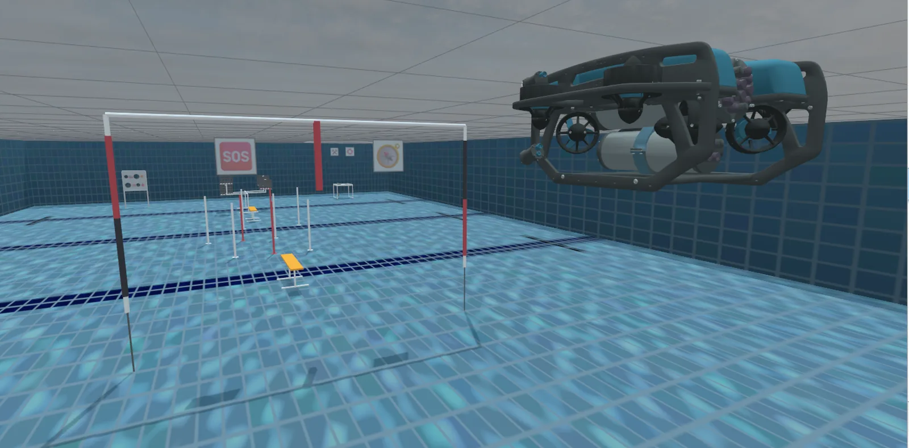
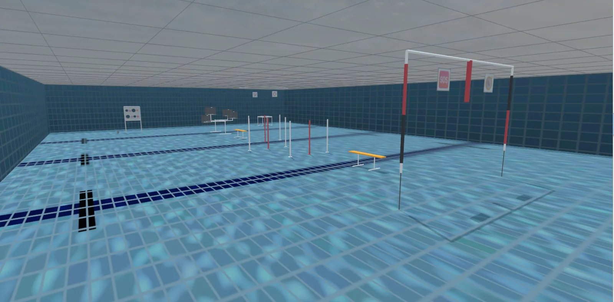
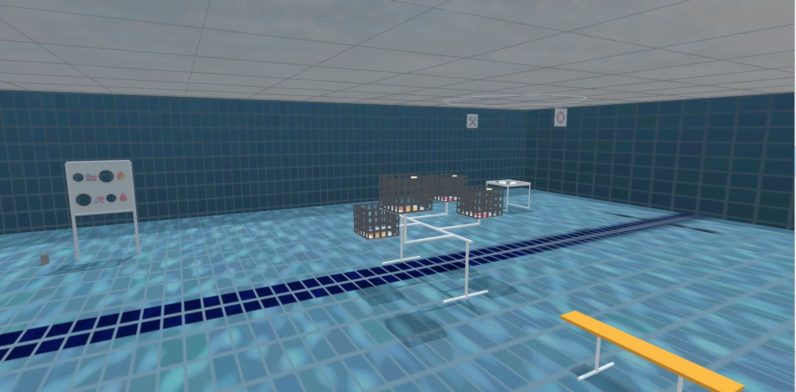
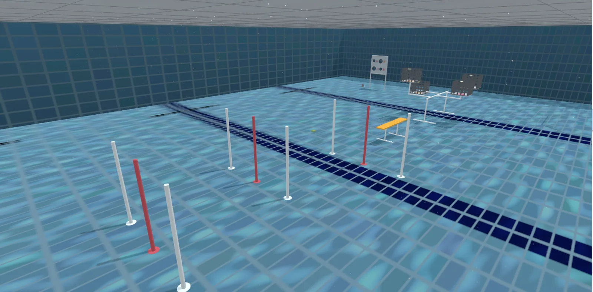
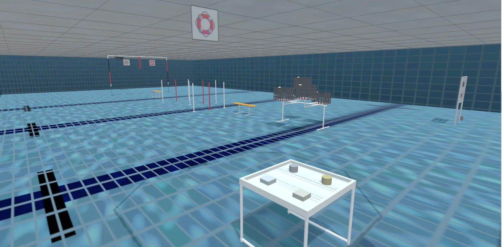
| what it models | why it had to be modelled | the number |
|---|---|---|
| Real T200 thrust curve | A straight line was wrong by a quarter of full thrust, so fine alignment behaved nothing like the pool | 12.24 N error |
| Water current | The lateral integral term existed to fight a current the simulator did not have | 0.12 m/s → 1.374 m in 40 s |
| Camera field of view in water | The in-air figure showed more of the course than the vehicle can ever see, so every search pattern was tuned against a view that does not exist | 80° → 57.7° |
| Bar30 noise | Ours was ten times too noisy on the one sensor every mission depends on | 0.02 m → 0.002 m |
| Fault injection | Five recovery paths existed in the code and had never once executed | DVL · camera · link · battery · thruster |
| Ground-truth labels | Hand labelling does not scale; the bounding-box sensor is occlusion-correct and free | 12.83 Hz vs 12.75 baseline |
Each of those rows started as a thing that looked fine. The pattern repeats so exactly that it became a rule: the simulator's job is not to look right, it is to be wrong in the same places the water is. A static prop generates contact and cannot be pushed. A cylinder and a box return no collision at all in one physics engine, so the vehicle drove through every gate leg and slalom pipe for months. Fog does not reach camera sensors, so thirteen courses shared one clarity while claiming six.
The archive higher up this page came out of here — 4,925 labelled frames, 27 classes, both competitions — and so did the honest finding that two of those sessions detect nothing under the current weights.
A simulator is where you are allowed to be wrong cheaply — which is only worth anything if you remember it is not the water.
What it sees — and how we know that it saw it
The rehearsal // 4,925 synthetic frames, and the stack run over them
Everything in this section is synthetic — frames
rendered by our own simulator, scored by a detector trained on simulator imagery. It is a
rehearsal, and calling it anything else would be the exact mistake this project exists to
refuse. What it does prove is that the pipeline runs end to end: the true detections are
handed to the same render_ui_strip() the vehicle draws with, so the operator
display below is real even though the water is not.
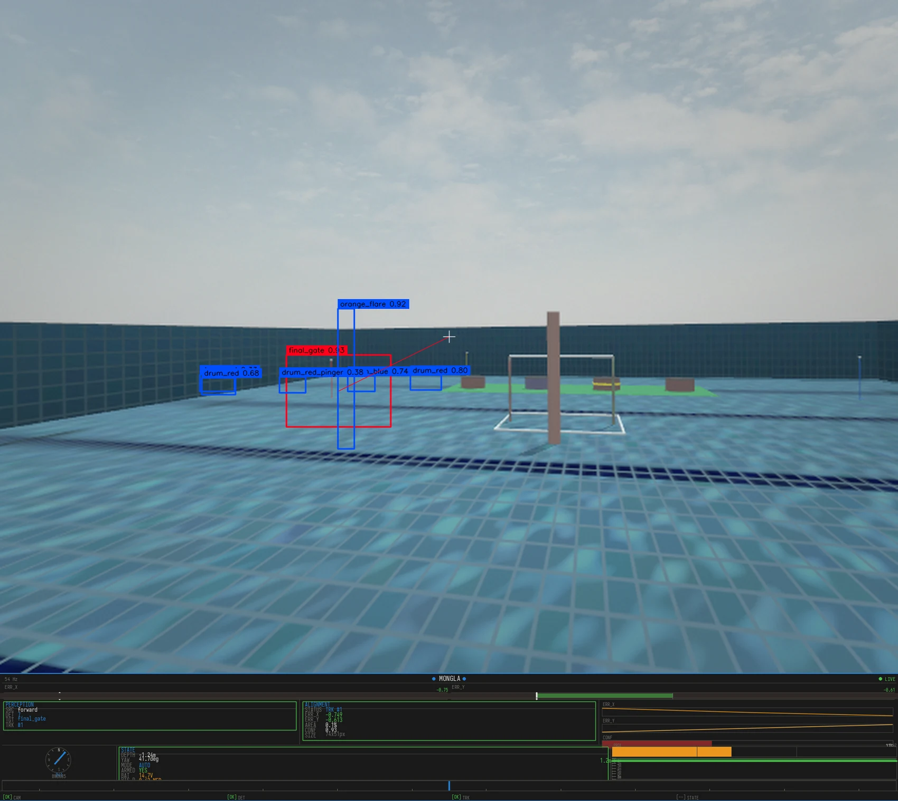
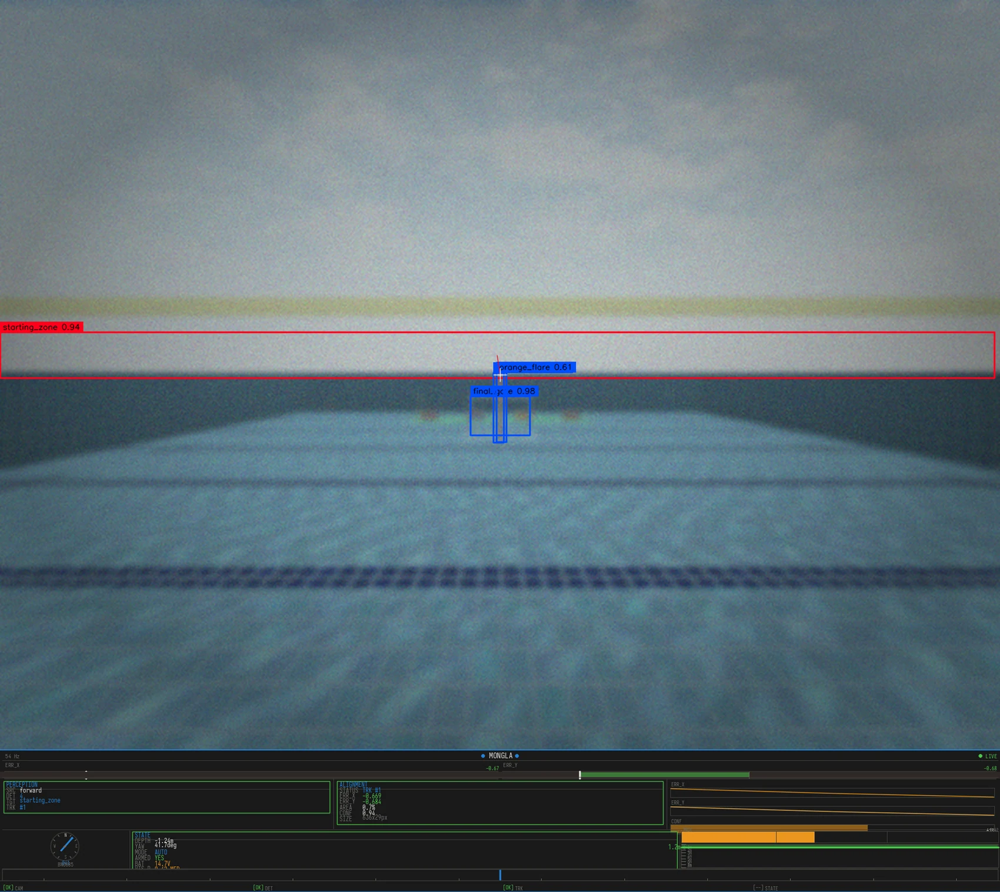
And the honest half: across the thirteen sessions, two returned no detections at all under these weights — they are a different course with a different class set. That is a fact about the model, not about the water, and it is here because a showcase that only shows the frames where the detector performed is a showcase of nothing.
| session | frames | richest frame | best confidence |
|---|---|---|---|
| sim_transit_clear | 1,120 | 7 detections | 0.93 |
| sim_transit_murky | 1,198 | — | — |
| rs_bbox | 894 | — | — |
| sim_clear | 309 | 5 detections | 0.60 |
| sim_murky | 312 | 4 detections | 0.98 |
| gate_approach ×3 | 421 | 0 detections | wrong class set |
| drum_orbit | 127 | 2 detections | 0.69 |
Every session carries its
own meta.json, its class list, ground-truth labels from the simulator's
bounding-box sensor, and the video it came from — 27 classes across both competitions.
Clean water teaches you the shape of the task. It teaches you nothing about the task.
The water // three venues, real weights, real footage
These are photographs. The weights are the ones trained during the 2025 season; the frames come from the 20 GB archive recorded at a pool in Mirpur and at RoboSub in Arizona. Six scenes, 3,345 real frames scanned, every frame chosen by searching its folder for the richest one — never picked by hand.
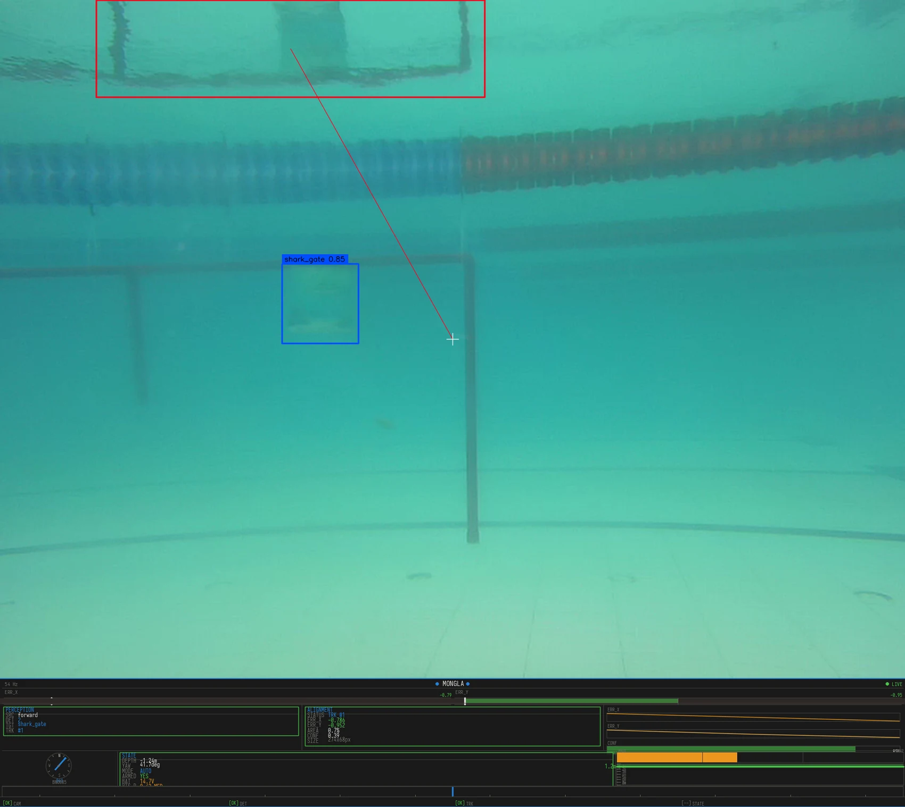
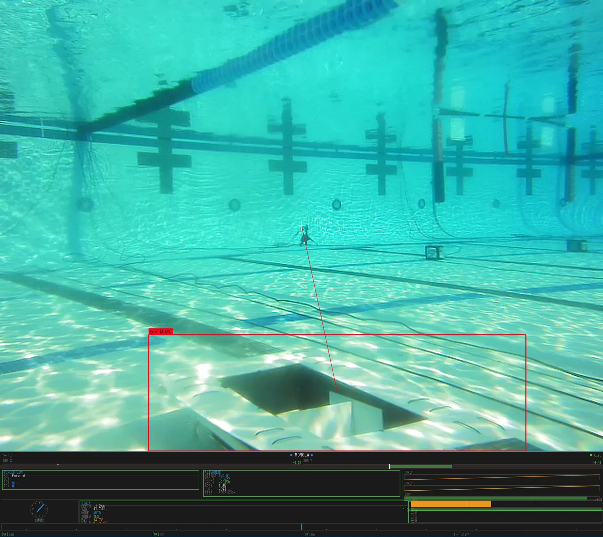
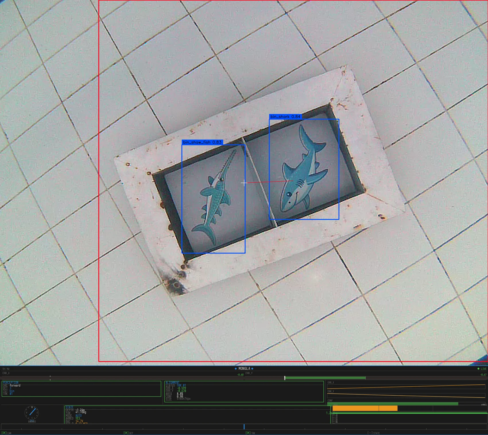
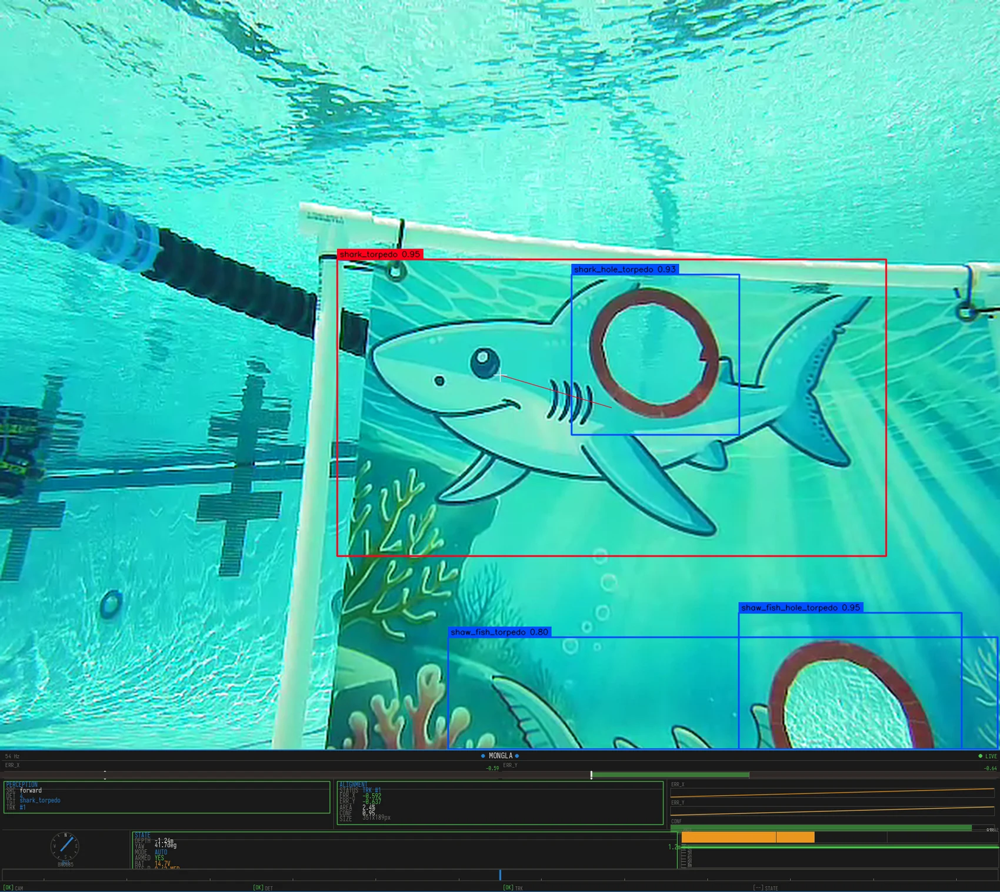
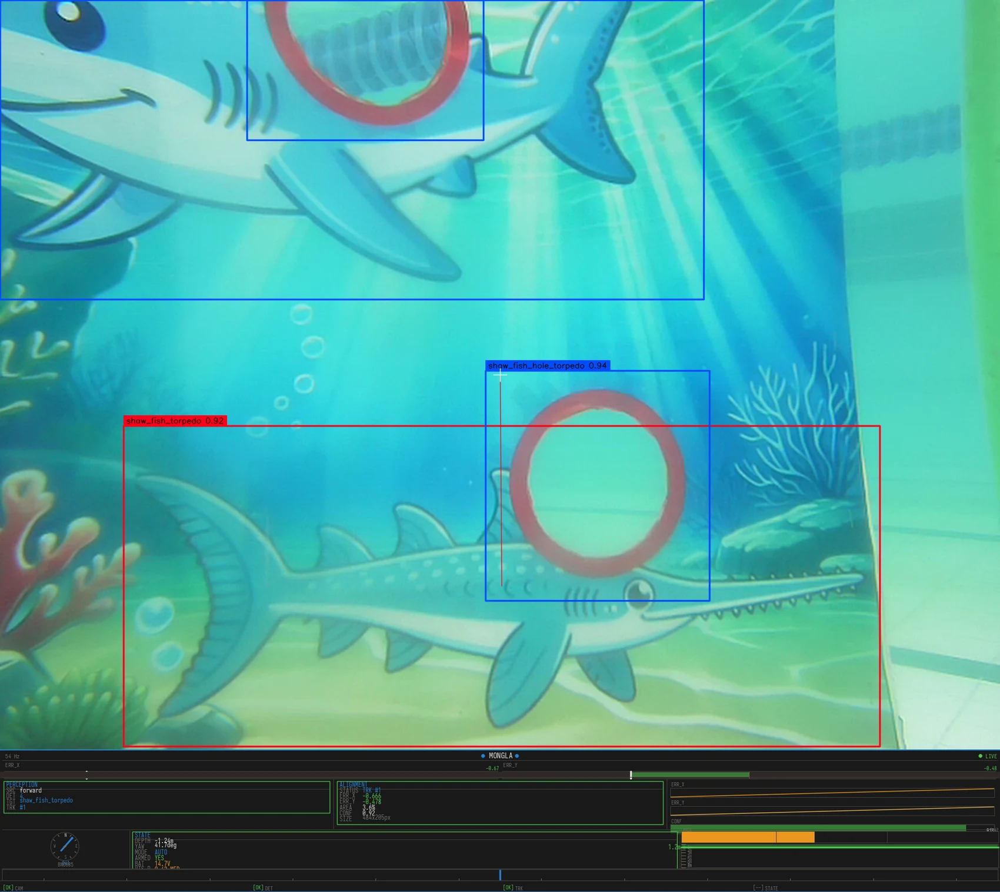
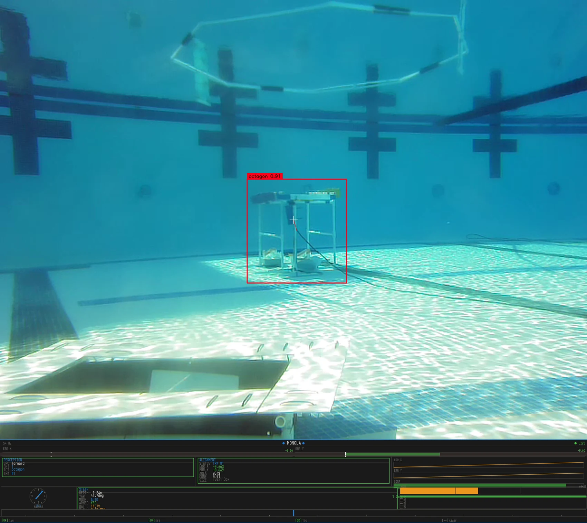
Look at the third one. The machine is not finding
"a bin" — it is reading the sawfish and the shark printed on
the two openings, bin_shaw_fish and bin_shark, both at
0.84. Which opening you drop into is the whole task, and that
distinction is what a season was spent teaching it.
| venue | what the water is like | task | frames | best |
|---|---|---|---|---|
| Mirpur | Indoor, turquoise, hazy — contrast falls off within a few metres | gate | 550 | shark_gate 0.85 |
| Mirpur | Same pool, closer in | torpedo | 378 | shaw_fish_hole 0.94 |
| RoboSub, Arizona | Outdoor, bright, hard moving sun caustics across the floor | bins | 639 | bin 0.94 |
| RoboSub, Arizona | Same pool, mid-water | torpedo | 775 | shark_torpedo 0.95 |
| RoboSub, Arizona | Looking up toward the surface | octagon | 410 | octagon 0.91 |
| Final run | Close over the prop, the placards legible | bins | 593 | bin_shark 0.90 |
Mirpur and Arizona are not the same problem. One is hazy and even; the other is bright, with caustics that sweep the floor and look exactly like motion. A threshold tuned in one is wrong in the other — which is why every number in this stack carries the conditions it was taken under, and why the simulator above bothers to model caustics at all.
The archive is 20 GB and stays out of this repository. What ships is
six stills and a manifest.json naming the exact source frame behind each one, so
any figure here can be re-derived with
one command.
The real footage did not make the detector look worse. It made our assumptions look worse.
Including every number we had to take back
Retractions // kept on purpose
The measurement ledger holds 67 entries and 581 rows of numbers. 12 of those entries say, in their own title, that they took an earlier result back; 6 more measured an idea and the answer was to leave it off. They are kept where anyone can read them, because a project that quietly deletes its wrong answers is a project you cannot check. The full ledger is here.
tools/ledger_strip.py — so it can miss a retraction that is not in a title, but it cannot invent one.gate detected in 30.4 % of frames → 1.2 % with it on
Seventeen configurations across four props and three venues. Never once positive. The implementation was correct; the original A/B was confounded. Preprocessing is off, and a test keeps it off.
selectivity 0.78× — it was doing the exact opposite
The shipped filter followed doubtful detections more closely than confident ones. It had been live, and every test passed, because no test compared the two directions.
a pooling artefact, not an effect
One clip contributed 1,299 far-field samples at the lowest jitter and zero near-field ones. The trend was an artefact of how samples were pooled. The feature stays off.
958 of 958 ESC frames read exactly 0 — with nothing plugged in
The check counted messages arriving, and messages arrive whether or not a motor exists. A gate that cannot fail is not a gate.
it has never once run closed
The sign was inverted until it was found, and the sensor was not fitted when it was written. Two armed bench checks now gate every automatic move — including a plain forward command, because on this board every automatic primitive closes the depth loop.
“It doesn’t make any difference how beautiful your guess is… If it disagrees with experiment, it’s wrong.”
Instruments // every number with where it was taken
Each of these lives in a ledger with its method, its conditions and the bar it had to clear — and the tests read that file, so a number cannot drift away from the measurement that produced it without something going red.
A number without its method is a rumour.
The language // how a machine is asked to do something
One action, thirty verbs, two vision primitives. The vision verbs never raise — they return where and how they finished, so a mission branches on reality instead of on an exception.
# hold station on the target, then fire mid-hold — still correcting res = mongla.vision.align( 'hole', lat=0, yaw=0, # centre it: signed px from frame centre fwd=62, fwd_mode='area', # and hold this standoff hold=4.0, fire=[1, 2], # two shots, spaced, each gated on a NEW frame lock_on=True, brake=False, ) if not res.saw_target: # never read x_px before this — NaN < n is silently False return search_pattern(mongla) if res.x_px > 0: # it ended right of centre, so recover right mongla.move_right(duration=0.6)
On the board this runs as streamed MANUAL_CONTROL in STABILIZE; an axis that would move the depth setpoint is refused, and comes back as FAILED rather than an exception.
Signed pixels from frame centre at the last frame the
target was seen: +x right, +y below. NaN if it was never seen — which is why
saw_target is read first.
The comment on the eighth line is the whole philosophy compressed: a result that is absent must never be mistaken for a result that is zero. The full verb table is in command-reference.md; what a vision verb hands back is in vision-results.md.
A mission that cannot say what went wrong is a mission that cannot recover from it.
The last idea // and the one nobody writes down
Every number the controller uses is a statement about a moment that has already gone, and each one is a different moment. The attitude is two milliseconds old. The depth is ten. The detection is eighteen at best, and during a gap it can be four seconds. Nothing in the code declares this — there is no variable called now to be wrong. The vehicle simply acts, at 500 Hz, on a picture assembled from clocks that never agreed.
Latency is a number you quote once. This is the thing latency does when you leave it running: the ages never line up, so every control tick blends a two-millisecond attitude with a detection from a fifth of a second ago and acts as though both describe the same world. Most of the time that is fine, because the world did not change much in that fifth of a second. The interesting question is the one the picture asks by itself — how wide is it allowed to get before "fine" stops being true?
That question has a shipped answer, and it was measured rather than chosen:
VISION_FRESH_ZERO_S is 0.20 s, which covers
56.3 % of the real gaps, and the lock ladder behind it was sized
against the same 71 dropouts. The rungs exist because the band in this figure gets wide.
Drag the figure into a p90 gap and count the ticks: the board runs several hundred control cycles on a detection that has not been refreshed once. The reflexes are fine — they never needed the camera — but every decision layered on top is being made about a world that has moved on, and the estimate of how far it moved is itself an estimate.
This is the honest reason a vehicle can be excellent at every individual number on this site and still lose a run. Nothing failed. The parts simply did not agree about when it was.
There is no instant in this system where everything is true at once. Now is a band, and the engineering is in how wide you let it get.
Shoulders // ten voices, and the instrument each one moved
A list of influences is a bookshelf. This is a dive: each voice sits at a depth, and choosing one lights the instrument in this vehicle that it changed — with the number that instrument shows today. If an idea did not move a reading, it has no business on the page.
“I just wondered how things were put together.”
Why he is at the top of this list: he is the reason a measurement is the unit of work here. Information is what survives a noisy channel — so a value a sensor cannot stand behind is not a small error, it is not information, and printing it as 0.0 manufactures certainty out of noise. That is why absence renders -- on the board and NaN here, why a 44-byte frame is drawn bit by bit further up this page, and why 958 of 958 empty ESC frames is a finding rather than a footnote. He is also the register: he did this for fun. Claude E. Shannon
Further // where to go if any of this caught you
This page is one project's answer. These are the places the questions came from — and the places to go if you would rather build your own answer than read mine.
Every number on this page traces to a file in it
Written for someone who has never seen a flight controller
Every row carries its evidence and a state — in water, on a bench, in software, blocked
Rakibul Islam's work — the other half of the machine
The rulebooks are the specification every prop in the simulator was built from
The essay that reframes the model as something you shape rather than write
Carmack, on treating every stage as somewhere to claw milliseconds back
Barrau & Bonnabel, 2014 — the filter this stack's localization is built on
Hartley, Ghaffari, Eustice & Grizzle — the clearest worked application of it
The argument for deleting before adding, from someone who does it in public
And if you are building one of these yourself: the single most useful thing in this repository is not any algorithm. It is measured-bars.md — every shipped constant with the measurement that produced it, the conditions it was taken under, and the bar it had to clear. The entries that take a number back sit in the same file as the ones that stand. That file is the project.
“The first principle is that you must not fool yourself — and you are the easiest person to fool.”
Act three // open
The honest list of what stands between this and a vehicle that swims:
None of that is hidden, because a capability map that promotes bench results to flight results is how a team finds out at the venue. The live list is ROADMAP.md — one status file, so it cannot disagree with itself.
I left on principle, and I am building this on hope rather than optimism. Hope is the decision to keep working on the better version of a thing while the current version is still broken. Pushing a technical limit is the most concrete form of that I know: every measurement that came back worse than expected is a small argument that the world is knowable, and that the next version can be better than this one.
The next act is open // the machine is still being built